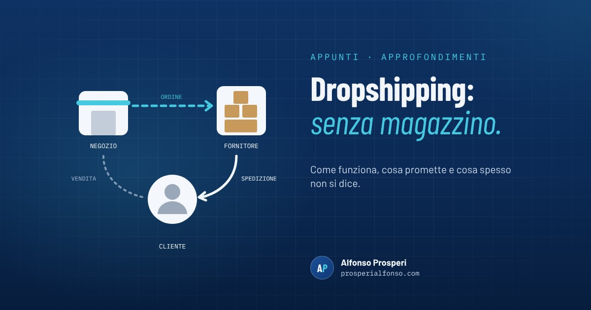

Il dropshipping è un modo di vendere online senza avere un magazzino. Tu gestisci il negozio e i clienti; un fornitore esterno tiene la merce e la spedisce. Sui social viene spesso presentato come il modo più facile per guadagnare online: vediamo come funziona davvero.
Come funziona
- Apri un negozio online o un profilo su un marketplace e pubblichi i prodotti di un fornitore.
- Un cliente compra da te e paga il tuo prezzo.
- Tu passi l'ordine al fornitore e paghi il suo prezzo, più basso.
- Il fornitore spedisce direttamente al cliente. La differenza tra i due prezzi è il tuo margine, da cui togliere costi e tasse.
Perché piace
- Poco capitale iniziale: non compri la merce prima di averla venduta.
- Niente magazzino e niente imballaggi da preparare.
- Catalogo flessibile: puoi provare prodotti diversi senza restare con la merce invenduta.
Cosa spesso non si dice
- Margini bassi e tanta concorrenza. Gli stessi prodotti li vendono in molti, spesso allo stesso fornitore. Per farsi notare servono pubblicità (annunci e social) che costano.
- Qualità e tempi che non controlli. Se il fornitore è lontano, la consegna può richiedere settimane e il prodotto può non essere come in foto.
- Verso il cliente rispondi tu. Per la legge il venditore sei tu: il cliente ha i suoi 14 giorni di recesso e la garanzia legale di 2 anni, e i problemi li devi risolvere tu, anche se la colpa è del fornitore.
- Dogana e IVA. Se la merce arriva da fuori Unione europea, possono esserci dazi e IVA da gestire correttamente, altrimenti ricadono sul cliente e diventano reclami.
Le regole in Italia
- Il dropshipping è legale, ma è a tutti gli effetti un'attività commerciale: se è abituale serve la partita IVA.
- Valgono tutti gli obblighi dell'e-commerce: informazioni chiare su venditore, prezzi e spedizioni, diritto di recesso, privacy.
- Dalla fine del 2024 il regolamento europeo sulla sicurezza dei prodotti (GPSR) chiede anche a chi vende online prodotti sicuri e conformi, con l'indicazione del responsabile nell'Unione europea. Con fornitori extra UE è un punto da verificare bene.
Se ci stai pensando
Ordina prima tu i prodotti per vederli e misurare i tempi di consegna, scegli fornitori affidabili (meglio se con magazzino in Europa), calcola il margine togliendo pubblicità, commissioni e tasse, e parla con un commercialista prima di partire. Diffida dei corsi che promettono guadagni facili e veloci: il lavoro vero è quello di un negozio, solo senza scaffali.